Alexandre Pichoux
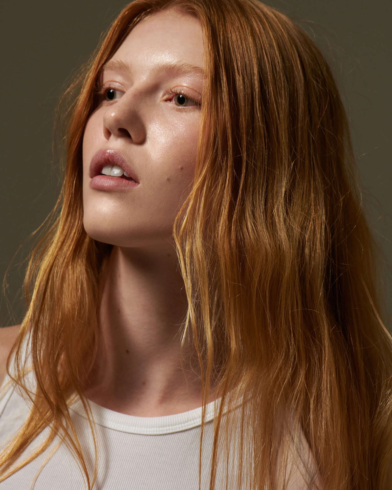
September 2021
Trained in prestigious salons, Alexandre Pichoux used his experiences of excellence to create his own and offer the best of mixed hairstyle by combining your style with his universe.
A true hairdressing house, the Alexandre Pichoux hairdressing salon, in Paris 4th district, now welcomes you in the heart of the Marais for an exclusive moment under the sign of beauty and hair shaping.
-
Creative Director
Emmanuel Cruellas
-
Project Manager
Morgane Urbain
-
Development
Jonathan Mo
-
Agency
Bonhomme
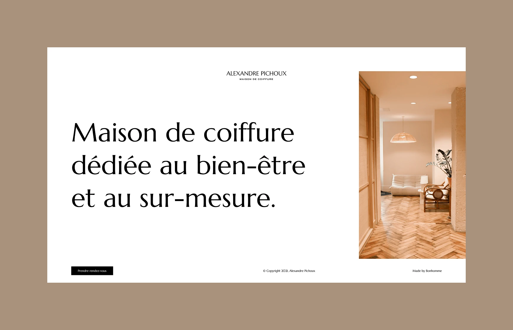
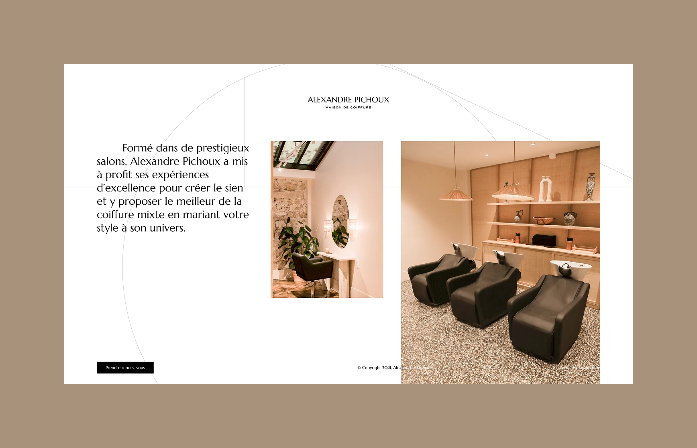
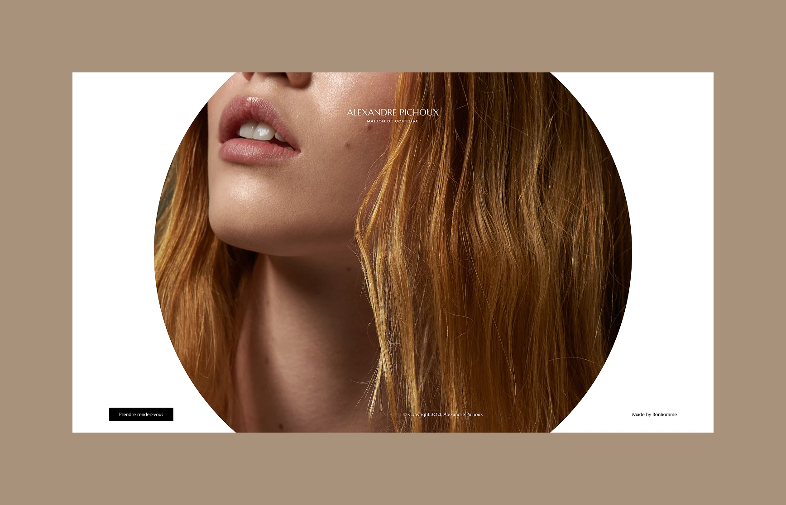
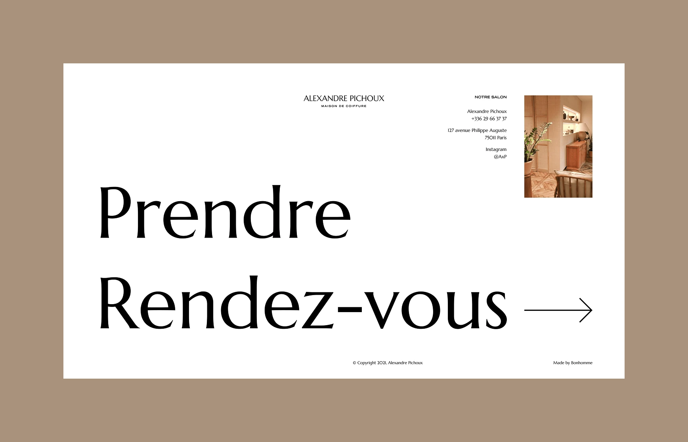
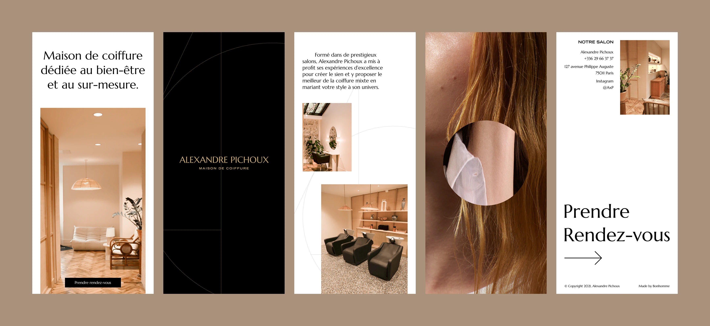
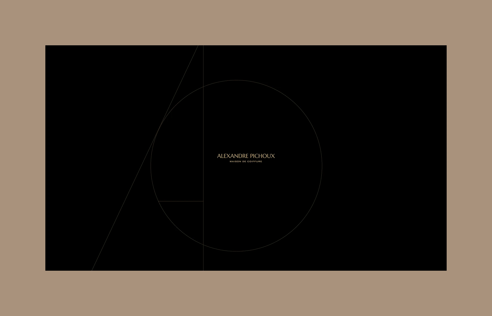
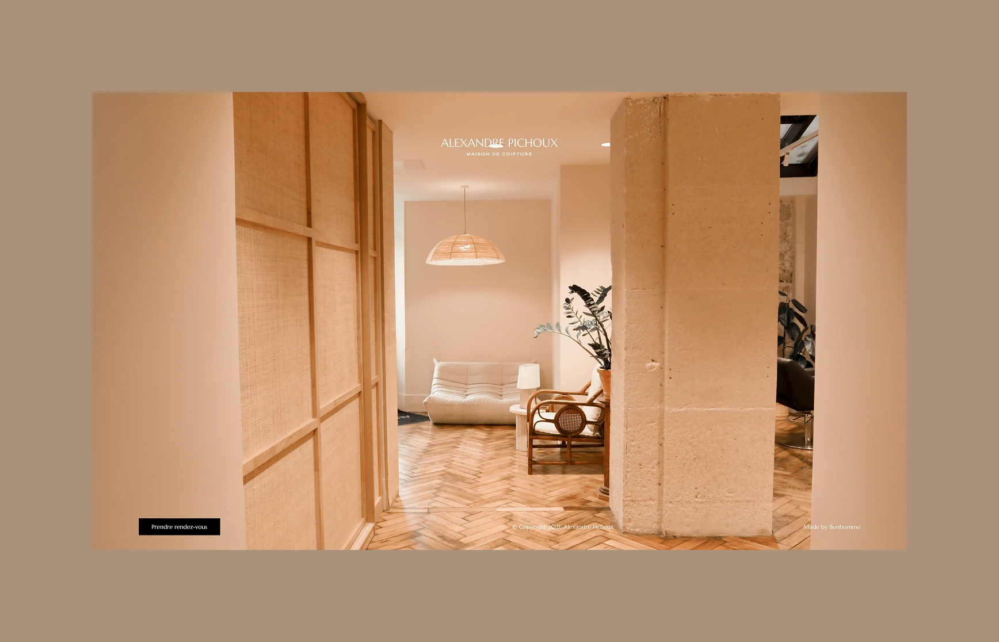
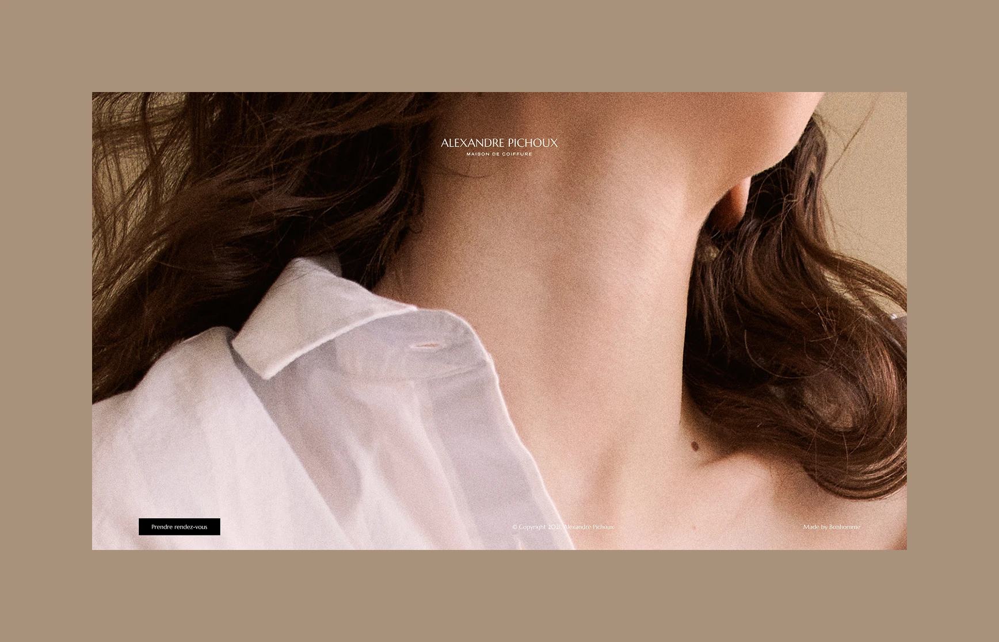
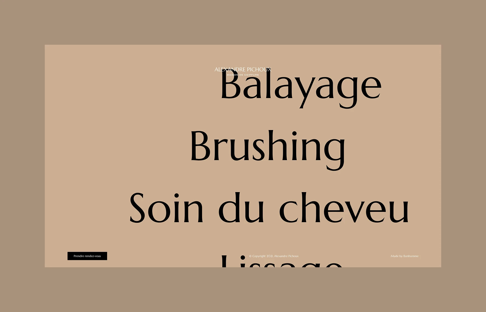
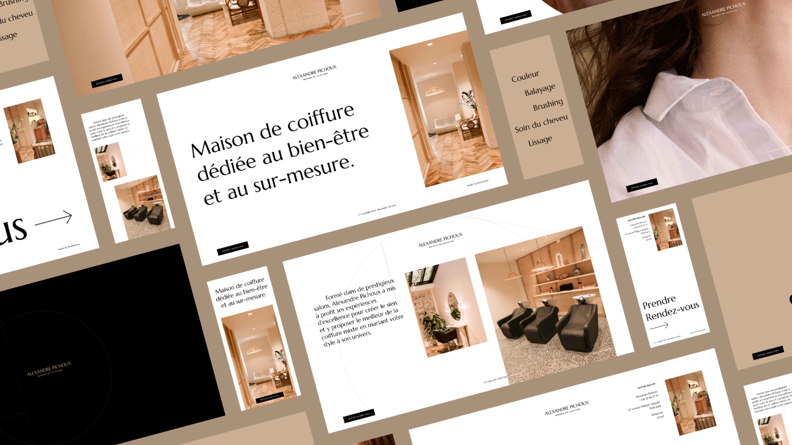